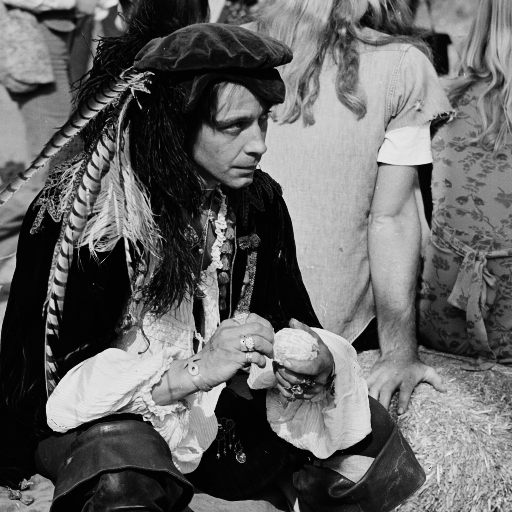
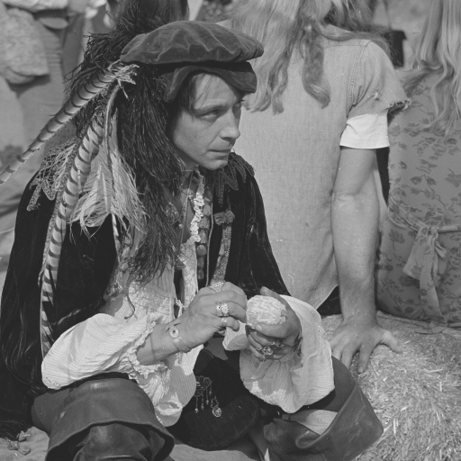
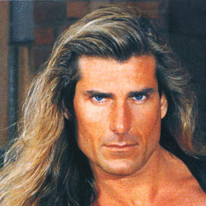
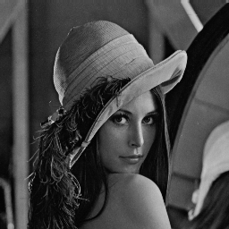
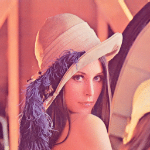
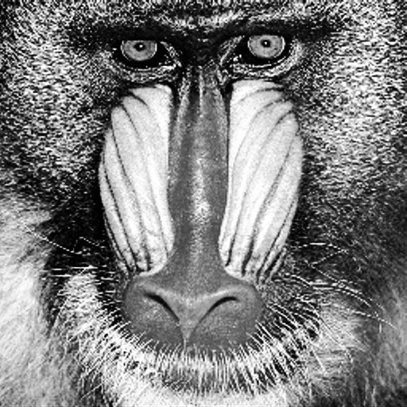
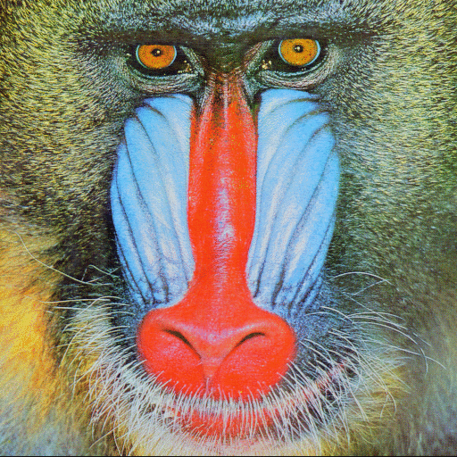
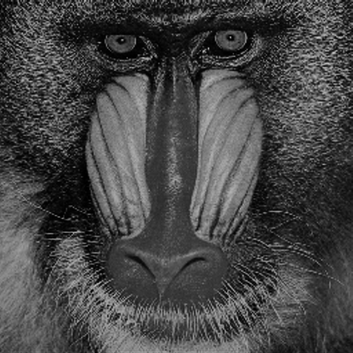
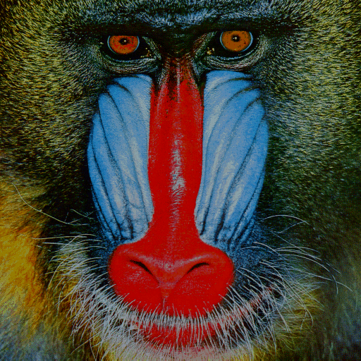

ImageContrastAdjustment.jl Documentation
Examples
Below are some examples of contrast adjustment operations that this package facilitates.
|

Contrast Stretching |

Contrast Stretching |
|

Linear Stretching/Normalization |

Linear Stretching/Normalization |
|

Gamma Correction |

Gamma Correction |
|

Histogram Equalization |

Histogram Equalization |
|

Midway Histogram Equalization |

Midway Histogram Equalization |
|
Histogram Matching |
Histogram Matching |
Functions
ImageContrastAdjustment.build_histogram — Function.edges, count = build_histogram(img, nbins)
edges, count = build_histogram(img, nbins; minval, maxval)
edges, count = build_histogram(img, edges)Generates a histogram for the image over nbins spread between [minval, maxval]. Color images are automatically converted to grayscale.
Output
Returns edges which is a AbstractRange type that specifies how the interval [minval, maxval] is divided into bins, and an array count which records the concomitant bin frequencies. In particular, count has the following properties:
count[0]is the number satisfyingx < edges[1]count[i]is the number of valuesxthat satisfyedges[i] <= x < edges[i+1]count[end]is the number satisfyingx >= edges[end].length(count) == length(edges)+1.
Details
One can consider a histogram as a piecewise-constant model of a probability density function $f$ [1]. Suppose that $f$ has support on some interval $I = [a,b]$. Let $m$ be an integer and $a = a_1 < a_2 < \ldots < a_m < a_{m+1} = b$ a sequence of real numbers. Construct a sequence of intervals
which partition $I$ into subsets $I_j$ $(j = 1, \ldots, m)$ on which $f$ is constant. These subsets satisfy $I_i \cap I_j = \emptyset, \forall i \neq j$, and are commonly referred to as bins. Together they encompass the entire range of data values such that $\sum_j |I_j | = | I |$. Each bin has width $w_j = |I_j| = a_{j+1} - a_j$ and height $h_j$ which is the constant probability density over the region of the bin. Integrating the constant probability density over the width of the bin $w_j$ yields a probability mass of $\pi_j = h_j w_j$ for the bin.
For a sample $x_1, x_2, \ldots, x_N$, let
represent the number of samples falling into the interval $I_j$. An estimate for the probability mass of the $j$th bin is given by the relative frequency $\hat{\pi} = \frac{n_j}{N}$, and the histogram estimator of the probability density function is defined as
The function $\hat{f}_n(x)$ is a genuine density estimator because $\hat{f}_n(x) \ge 0$ and
Options
Various options for the parameters of this function are described in more detail below.
Choices for nbins
You can specify the number of discrete bins for the histogram. When specifying the number of bins consider the maximum number of graylevels that your image type supports. For example, with an image of type N0f8 there is a maximum of 256 possible graylevels. Hence, if you request more than 256 bins for that type of image you should expect to obtain zero counts for numerous bins.
Choices for minval
You have the option to specify the lower bound of the interval over which the histogram will be computed. If minval is not specified then the minimum value present in the image is taken as the lower bound.
Choices for maxval
You have the option to specify the upper bound of the interval over which the histogram will be computed. If maxval is not specified then the maximum value present in the image is taken as the upper bound.
Choices for edges
If you do not designate the number of bins, nor the lower or upper bound of the interval, then you have the option to directly stipulate how the intervals will be divided by specifying a AbstractRange type.
Example
Compute the histogram of a grayscale image.
using TestImages, FileIO, ImageView
img = testimage("mandril_gray");
edges, counts = build_histogram(img, 256, minval = 0, maxval = 1)Given a color image, compute the histogram of the red channel.
img = testimage("mandrill")
r = red.(img)
edges, counts = build_histogram(r, 256, minval = 0, maxval = 1)References
[1] E. Herrholz, "Parsimonious Histograms," Ph.D. dissertation, Inst. of Math. and Comp. Sci., University of Greifswald, Greifswald, Germany, 2011.
See also:
| Operation | Function Name | In-place Variant |
|---|---|---|
| Histogram Equalization | adjust_histogram | adjust_histogram! |
| Midway Histogram Equalization | adjust_histogram | adjust_histogram! |
| Histogram Matching | adjust_histogram | adjust_histogram! |
| Gamma Correction | adjust_histogram | adjust_histogram! |
| Linear Stretching | adjust_histogram | adjust_histogram! |
| Contrast Stretching | adjust_histogram | adjust_histogram! |
ImageContrastAdjustment.adjust_histogram — Method.adjust_histogram(Equalization(),img, nbins)
adjust_histogram(Equalization(),img, nbins; minval, maxval)Returns a histogram equalized image with a granularity of nbins number of bins.
Details
Histogram equalization was initially conceived to improve the contrast in a single-channel grayscale image. The method transforms the distribution of the intensities in an image so that they are as uniform as possible [1]. The natural justification for uniformity is that the image has better contrast if the intensity levels of an image span a wide range on the intensity scale. As it turns out, the necessary transformation is a mapping based on the cumulative histogram.
One can consider an $L$-bit single-channel $I \times J$ image with gray values in the set $\{0,1,\ldots,L-1 \}$, as a collection of independent and identically distributed random variables. Specifically, let the sample space $\Omega$ be the set of all $IJ$-tuples $\omega =(\omega_{11},\omega_{12},\ldots,\omega_{1J},\omega_{21},\omega_{22},\ldots,\omega_{2J},\omega_{I1},\omega_{I2},\ldots,\omega_{IJ})$, where each $\omega_{ij} \in \{0,1,\ldots, L-1 \}$. Furthermore, impose a probability measure on $\Omega$ such that the functions $\Omega \ni \omega \to \omega_{ij} \in \{0,1,\ldots,L-1\}$ are independent and identically distributed.
One can then regard an image as a matrix of random variables $\mathbf{G} = [G_{i,j}(\omega)]$, where each function $G_{i,j}: \Omega \to \mathbb{R}$ is defined by
and each $G_{i,j}$ is distributed according to some unknown density $f_{G}$. While $f_{G}$ is unknown, one can approximate it with a normalized histogram of gray levels,
where
represents the number of times a gray level with intensity $v$ occurs in $\mathbf{G}$. To transform the distribution of the intensities so that they are as uniform as possible one needs to find a mapping $T(\cdot)$ such that $T(G_{i,j}) \thicksim U$. The required mapping turns out to be the cumulative distribution function (CDF) of the empirical density $\hat{f}_{G}$,
Options
Various options for the parameters of this function are described in more detail below.
Choices for img
The adjust_histogram(Equalization(),...) function can handle a variety of input types. The type of the returned image matches the input type.
For colored images, the input is converted to YIQ type and the Y channel is equalized. This is the combined with the I and Q channels and the resulting image converted to the same type as the input.
Choices for nbins
You can specify the total number of bins in the histogram.
Choices for minval and maxval
If minval and maxval are specified then intensities are equalized to the range [minval, maxval]. The default values are 0 and 1.
Example
using TestImages, FileIO, ImageView
img = testimage("mandril_gray")
imgeq = adjust_histogram(Equalization(),img,256, minval = 0, maxval = 1)
imshow(img)
imshow(imgeq)References
- R. C. Gonzalez and R. E. Woods. Digital Image Processing (3rd Edition). Upper Saddle River, NJ, USA: Prentice-Hall, 2006.
See also:
| Operation | Function Name | In-place Variant |
|---|---|---|
| Histogram Construction | build_histogram | |
| Midway Histogram Equalization | adjust_histogram | adjust_histogram! |
| Histogram Matching | adjust_histogram | adjust_histogram! |
| Gamma Correction | adjust_histogram | adjust_histogram! |
| Linear Stretching | adjust_histogram | adjust_histogram! |
| Contrast Stretching | adjust_histogram | adjust_histogram! |
adjust_histogram!(Equalization(),img, nbins)
adjust_histogram!(Equalization(),img, nbins; minval, maxval)Same as adjust_histogram except that it modifies the image that was passed as an argument.
ImageContrastAdjustment.adjust_histogram — Method.adjust_histogram(MidwayEqualization(),img1, img2, nbins)
adjust_histogram(MidwayEqualization(),img1, img2, edges)Gives a pair of images the same histogram whilst maintaining as much as possible their previous grey level dynamics.
Details
The purpose of midway histogram equalization is to transform the intensities in a pair of images so that the intensities distribute according to a common "midway" distribution. The histogram representing the common distribution is chosen so that the original gray level dynamics of the images are preserved as much as possible. If one interprets histograms as piecewise-constant models of probability density functions (see build_histogram), then the midway histogram equalization task can be modeled as the problem of transforming one probability distribution into another (see adjust_histogram). It turns out that the solution to this transformation problem involves the cumulative and inverse cumulative distribution functions of the source and "midway" probability density functions. In particular, let the random variables $X_i \thicksim p_{x_i} \; (i = 1,2)$, and $Z \thicksim p_{z}$ represent an intensity in the first, second and "midway" image respectively, and let
represent the cumulative distribution functions of the two input images, and their harmonic mean, respectively. Then the sought-after mapping $Q_{X_i}(\cdot)$ $(i = 1,2)$ such that $Q_{X_i}(x) \thicksim p_{z}$ is given by
where $T_{Z}^{-1}(y) = \operatorname{min} \{ x \in \mathbb{R} : y \leq T_{Z}(x) \}$ is the inverse cumulative distribution function of $T_{Z}(x)$.
Options
Various options for the parameters of this function are described in more detail below.
Choices for img1 and img2
The function can handle a variety of input types. The type of the returned image matches the input type.
For colored images, the inputs are converted to YIQ type and the distributions of the Y channels are transformed according to a "midway" distribution. The modified Y channel is then combined with the I and Q channels and the resulting image converted to the same type as the input.
Choices for nbins
You can specify the total number of bins in the histogram. If you do not specify the number of bins then a default value of 256 bins is utilized.
Choices for edges
If you do not designate the number of bins, then you have the option to directly stipulate how the intervals will be divided by specifying a AbstractRange type.
Example
using Images, TestImages, ImageView, ImageContrastAdjustment
img = testimage("mandril_gray")
# The same image but with different intensitiy distributions
img1 = adjust_histogram(GammaCorrection(),img, 2)
img2 = adjust_histogram(GammaCorrection(),img, 1.2)
# Midway histogram equalization will transform these two images so that their
# intensity distributions are almost identical.
img1o, img2o = adjust_histogram(MidwayEqualization(),img1, img2, 256)
References
- T. Guillemot and J. Delon, “Implementation of the Midway Image Equalization,” Image Processing On Line, vol. 5, pp. 114–129, Jun. 2016. doi:10.5201/ipol.2016.140
See also:
| Operation | Function Name | In-place Variant |
|---|---|---|
| Histogram Construction | build_histogram | |
| Histogram Equalization | adjust_histogram | adjust_histogram! |
| Histogram Matching | adjust_histogram | adjust_histogram! |
| Gamma Correction | adjust_histogram | adjust_histogram! |
| Linear Stretching | adjust_histogram | adjust_histogram! |
| Contrast Stretching | adjust_histogram | adjust_histogram! |
adjust_histogram!(MidwayEqualization(),img1, img2, nbins)
adjust_histogram!(MidwayEqualization(),img1, img2, edges)Same as adjust_histogram except that it modifies the images that were passed as arguments.
ImageContrastAdjustment.adjust_histogram — Method.adjust_histogram(Matching(),img, targetimg, nbins)
adjust_histogram(Matching(),img, targetimg, edges)Returns a histogram matched image with a granularity of nbins number of bins. The first argument img is the image to be matched, and the second argument targetimg is the image having the desired histogram to be matched to.
Details
The purpose of histogram matching is to transform the intensities in a source image so that the intensities distribute according to the histogram of a specified target image. If one interprets histograms as piecewise-constant models of probability density functions (see build_histogram), then the histogram matching task can be modelled as the problem of transforming one probability distribution into another [1]. It turns out that the solution to this transformation problem involves the cumulative and inverse cumulative distribution functions of the source and target probability density functions.
In particular, let the random variables $x \thicksim p_{x}$ and $z \thicksim p_{z}$ represent an intensity in the source and target image respectively, and let
represent their concomitant cumulative distribution functions. Then the sought-after mapping $Q(\cdot)$ such that $Q(x) \thicksim p_{z}$ is given by
where $T^{-1}(y) = \operatorname{min} \{ x \in \mathbb{R} : y \leq T(x) \}$ is the inverse cumulative distribution function of $T(x)$.
The mapping suggests that one can conceptualize histogram matching as performing histogram equalization on the source and target image and relating the two equalized histograms. Refer to adjust_histogram for more details on histogram equalization.
Options
Various options for the parameters of this function are described in more detail below.
Choices for img and targetimg
The adjust_histogram(Matching(),...) function can handle a variety of input types. The type of the returned image matches the input type.
For colored images, the inputs are converted to YIQ type and the distributions of the Y channels are matched. The modified Y channel is then combined with the I and Q channels and the resulting image converted to the same type as the input.
Choices for nbins
You can specify the total number of bins in the histogram. If you do not specify the number of bins then a default value of 256 bins is utilized.
Choices for edges
If you do not designate the number of bins, then you have the option to directly stipulate how the intervals will be divided by specifying a AbstractRange type.
Example
using Images, TestImages, ImageView
img_source = testimage("mandril_gray")
img_target = adjust_gamma(img_source, 1/2)
img_transformed = adjust_histogram(Matching(),img_source, img_target)
#=
A visual inspection confirms that img_transformed resembles img_target
much more closely than img_source.
=#
imshow(img_source)
imshow(img_target)
imshow(img_transformed)References
- W. Burger and M. J. Burge. Digital Image Processing. Texts in Computer Science, 2016. doi:10.1007/978-1-4471-6684-9
See also:
| Operation | Function Name | In-place Variant |
|---|---|---|
| Histogram Construction | build_histogram | |
| Histogram Equalization | adjust_histogram | adjust_histogram! |
| Midway Histogram Equalization | adjust_histogram | adjust_histogram! |
| Gamma Correction | adjust_histogram | adjust_histogram! |
| Linear Stretching | adjust_histogram | adjust_histogram! |
| Contrast Stretching | adjust_histogram | adjust_histogram! |
adjust_histogram!(Matching(),img, targetimg, nbins)
adjust_histogram!(Matching(),img, targetimg, edges)Same as adjust_histogram except that it modifies the image that was passed as an argument.
ImageContrastAdjustment.adjust_histogram — Method.adjust_histogram(GammaCorrection(),img, gamma)Returns a gamma corrected image.
Details
Gamma correction is a non-linear transformation given by the relation
It is called a power law transformation because one quantity varies as a power of another quantity.
Gamma correction has historically been used to preprocess an image to compensate for the fact that the intensity of light generated by a physical device is not usually a linear function of the applied signal but instead follows a power law [1]. For example, for many Cathode Ray Tubes (CRTs) the emitted light intensity on the display is approximately equal to the voltage raised to the power of γ, where γ ∈ [1.8, 2.8]. Hence preprocessing a raw image with an exponent of 1/γ would have ensured a linear response to brightness.
Research in psychophysics has also established an empirical power law between light intensity and perceptual brightness. Hence, gamma correction often serves as a useful image enhancement tool.
Options
Various options for the parameters of this function are described in more detail below.
Choices for img
The function can handle a variety of input types. The returned image depends on the input type.
For colored images, the input is converted to YIQ type and the Y channel is gamma corrected. This is the combined with the I and Q channels and the resulting image converted to the same type as the input.
Choice for gamma
The gamma value must be a non-zero positive number. A gamma value less than one will yield a brighter image whereas a value greater than one will produce a darker image. If left unspecified a default value of one is assumed.
Example
using ImageContrastAdjustment, ImageView
# Create an example image consisting of a linear ramp of intensities.
n = 32
intensities = 0.0:(1.0/n):1.0
img = repeat(intensities, inner=(20,20))'
# Brighten the dark tones.
imgadj = adjust_histogram(GammaCorrection(), img, 1/2)
# Display the original and adjusted image.
imshow(img)
imshow(imgadj)References
- W. Burger and M. J. Burge. Digital Image Processing. Texts in Computer Science, 2016. doi:10.1007/978-1-4471-6684-9
See also:
| Operation | Function Name | In-place Variant |
|---|---|---|
| Histogram Construction | build_histogram | |
| Histogram Equalization | adjust_histogram | adjust_histogram! |
| Midway Histogram Equalization | adjust_histogram | adjust_histogram! |
| Histogram Matching | adjust_histogram | adjust_histogram! |
| Linear Stretching | adjust_histogram | adjust_histogram! |
| Contrast Stretching | adjust_histogram | adjust_histogram! |
adjust_histogram!(GammaCorrection(),img, gamma)Same as adjust_histogram except that it modifies the image that was passed as an argument.
ImageContrastAdjustment.adjust_histogram — Method.adjust_histogram(LinearStretching(), img; minval = 0, maxval = 1)Returns an image where the range of the intensities spans the interval [minval, maxval].
Details
Linear stretching (also called normalization) is a contrast enhancing transformation that is used to modify the dynamic range of the image. In particular, suppose that the input image has gray values in the range [A,B] and one wishes to change the dynamic range to [a,b] using a linear mapping, then the necessary transformation is given by the relation
Options
Various options for the parameters of this function are described in more detail below.
Choices for img
The function can handle a variety of input types. The returned image depends on the input type.
For colored images, the input is converted to the YIQ type and the intensities of the Y channel are stretched to the specified range. The modified Y channel is then combined with the I and Q channels and the resulting image converted to the same type as the input.
Choices for minval and maxval
If minval and maxval are specified then intensities are mapped to the range [minval, maxval]. The default values are 0 and 1.
Example
using ImageContrastAdjustment, ImageView, TestImages, Images
img = testimage("mandril_gray")
imgo = adjust_histogram(LinearStretching(),img, minval = 0, maxval = 1)
References
- W. Burger and M. J. Burge. Digital Image Processing. Texts in Computer Science, 2016. doi:10.1007/978-1-4471-6684-9
See also:
| Operation | Function Name | In-place Variant |
|---|---|---|
| Histogram Construction | build_histogram | |
| Histogram Equalization | adjust_histogram | adjust_histogram! |
| Midway Histogram Equalization | adjust_histogram | adjust_histogram! |
| Histogram Matching | adjust_histogram | adjust_histogram! |
| Gamma Correction | adjust_histogram | adjust_histogram! |
| Contrast Stretching | adjust_histogram | adjust_histogram! |
adjust_histogram!(LinearStretching(), img; minval = 0.0, maxval = 1.0)Same as adjust_histogram except that it modifies the image that was passed as an argument.
ImageContrastAdjustment.adjust_histogram — Method.adjust_histogram(ContrastStretching(), img; t = 0.5, slope = 1.0)Returns an image where intensities intensities below t are compressed into a narrower range of dark intensities, and values above t are compressed into a narrower band of light intensities.
Details
Contrast stretching is a transformation that enhances or reduces (for slope > 1 or < 1, respectively) the contrast near saturation (0 and 1). It is given by the relation
where $s$ represents the slope argument.
Options
Various options for the parameters of this function are described in more detail below.
Choices for img
The function can handle a variety of input types. The returned image depends on the input type.
For colored images, the input is converted to the YIQ type and the intensities of the Y channel are stretched to the specified range. The modified Y channel is then combined with the I and Q channels and the resulting image converted to the same type as the input.
Choice for t
The value of t needs to be in the unit interval. If left unspecified a default value of 0.5 is utilized.
Choice for slope
The value of slope can be any real number. If left unspecified a default value of 1.0 is utilized.
Example
using ImageContrastAdjustment, ImageView, Images, TestImages
img = testimage("mandril_gray")
ret = adjust_histogram(ContrastStretching(),img, t = 0.6, slope = 3)
References
- Gonzalez, R. C., Woods, R. E., & Eddins, S. L. (2004). Digital image processing using MATLAB (Vol. 624). Upper Saddle River, New Jersey: Pearson-Prentice-Hall.
See also:
| Operation | Function Name | In-place Variant |
|---|---|---|
| Histogram Construction | build_histogram | |
| Histogram Equalization | adjust_histogram | adjust_histogram! |
| Midway Histogram Equalization | adjust_histogram | adjust_histogram! |
| Histogram Matching | adjust_histogram | adjust_histogram! |
| Gamma Correction | adjust_histogram | adjust_histogram! |
| Linear Stretching | adjust_histogram | adjust_histogram! |
adjust_histogram!(ContrastStretching(),img; t = 0.5, slope = 1.0)Same as adjust_histogram except that it modifies the image that was passed as an argument.
Index
ImageContrastAdjustment.adjust_histogramImageContrastAdjustment.adjust_histogramImageContrastAdjustment.adjust_histogramImageContrastAdjustment.adjust_histogramImageContrastAdjustment.adjust_histogramImageContrastAdjustment.adjust_histogramImageContrastAdjustment.adjust_histogram!ImageContrastAdjustment.adjust_histogram!ImageContrastAdjustment.adjust_histogram!ImageContrastAdjustment.adjust_histogram!ImageContrastAdjustment.adjust_histogram!ImageContrastAdjustment.adjust_histogram!ImageContrastAdjustment.build_histogram